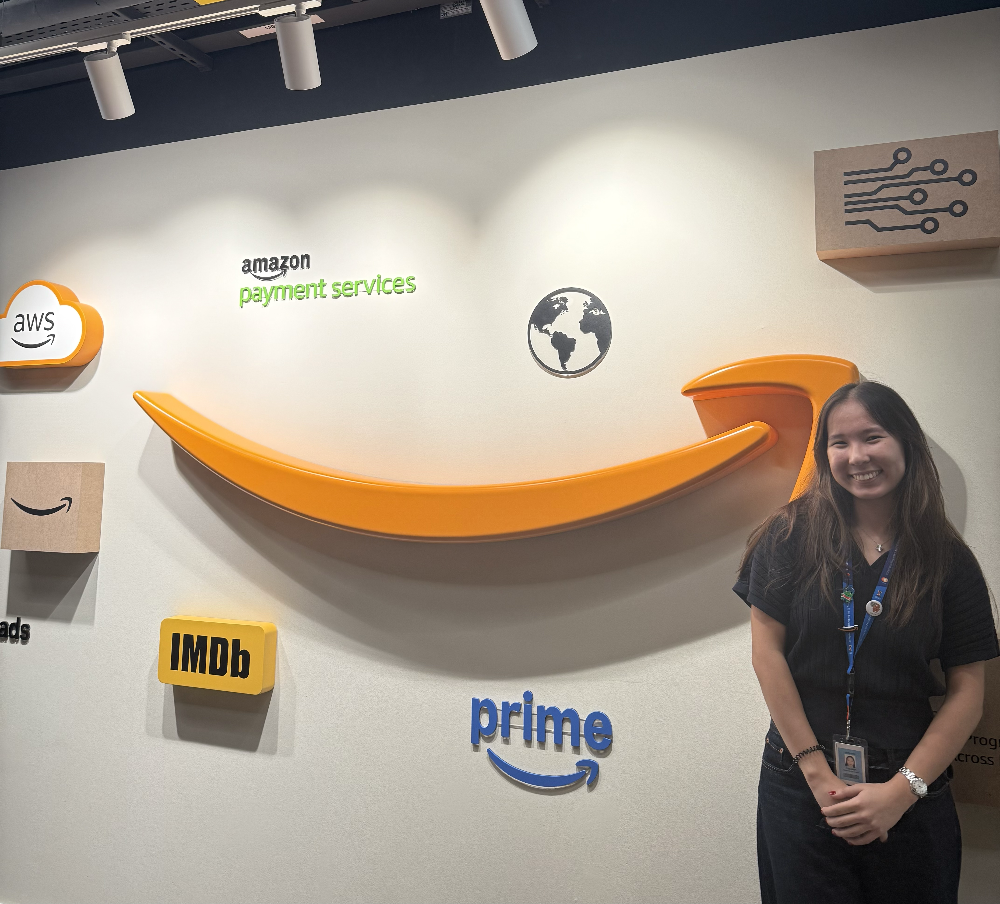
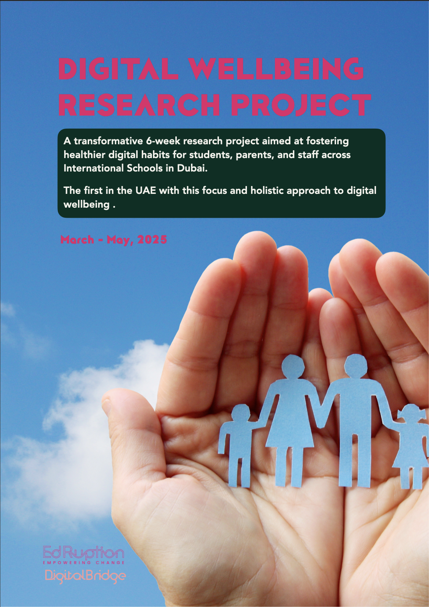
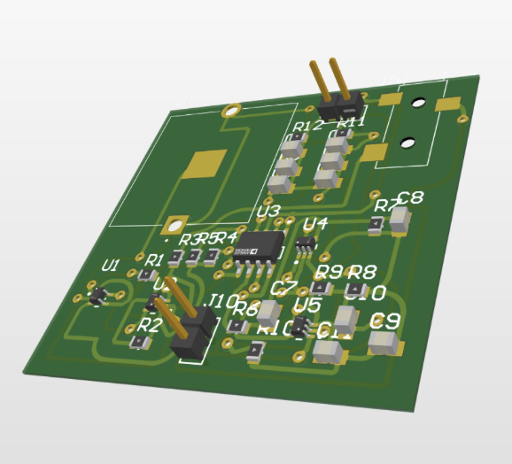

🌻 I am currently a Data Science & AI for Business MScT student at École Polytechnique & HEC Paris (X-HEC) and recent Electrical Engineering NYU Abu Dhabi graduate. Working with signal and sensor data in my research and internships drew me to data science.
I am passionate about
Fluent in English/Russian/Kazakh and actively learning French (C1).
🏔 Born and raised in Almaty, Kazakhstan. Currently based in Paris.
In my free time I love hiking, fashion, reading, playing tennis and the piano.
Led a safety rebranding initiative across five UAE sites, coordinating 15 stakeholders nationwide. I also analyzed incident data to track risk trends, presented insights to leadership, and assessed ergonomic risks to improve everyday practices like lifting and stocking.
Research | Python | Excel | Project Management

Coordinated a team of three interns on a digital-wellbeing study across five Dubai schools, analyzing 601 survey responses
to compare participating families against a control group.
At the end of the project, I was honored to have co-authored and publish the report with our results.
For more details check out the report.
Research | Python | Excel | Project Management

Collected and analyzed NHPT data in Excel and MATLAB, utilizing statistical methods and visualizations;
Ran experiments using wet EEG caps, collected data, and prepared the equipment for the next participants;
Studied topical articles, shared findings with the team in weekly meetings, and discussed progress to optimize experiments.
Unity | MATLAB | bHaptics Designer | bHaptics Developer

Designed, soldered and tested a 44×44 mm circuit board as a part of the
final Electronics project. The PCB recorded a real heartbeat through
standard electrode leads,
the core component of a heart monitor.
Altium | Cadence | Soldering

I supported programming labs for 50 students in C++ and MATLAB, grading weekly assignments and giving feedback. I also tutored a rotating group of students in statistics, probability and calculus.
Teaching | C++ | MATLAB | OOP Calculus 1-3 | Probability and Statistics